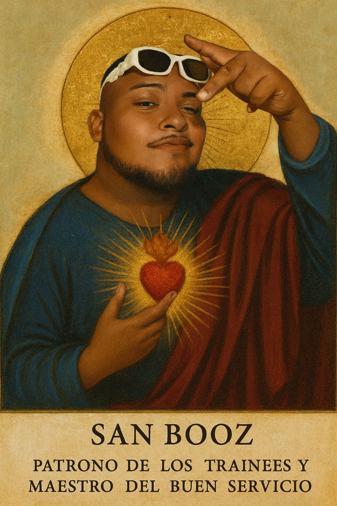
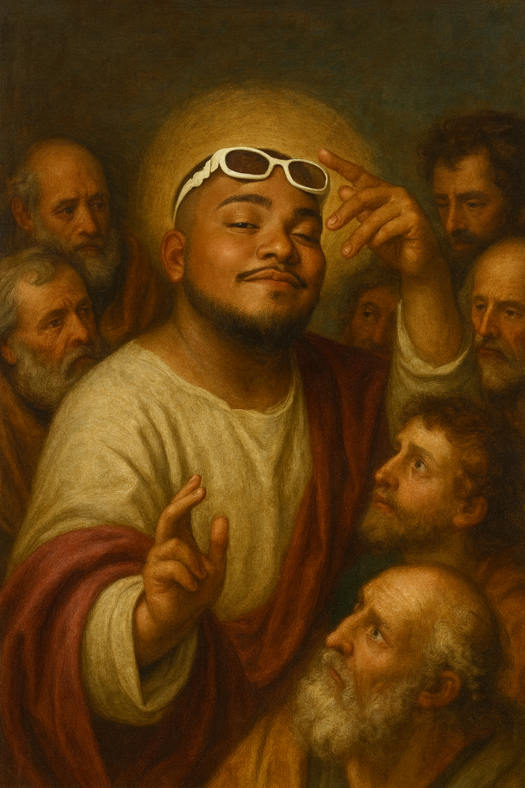

San Booz — Patrono de los Trainees y Maestro del Buen Servicio
Orden devocional de atención al cliente por chat: empatía, claridad y resolución, guiados por métricas vivas.

Nuestra orden
San Booz nos entrena para servir con foco y humanidad: primera respuesta empática, solución clara y cierre confirmado — siempre por chat.
Métricas sagradas
“Con Booz: cierre en menos de 2 minutos.”
Credo de San Booz
Creo en San Booz, Patrono de los Trainees y Maestro del Buen Servicio, que nos entrena en la paciencia, la claridad y la resolución de tickets.
Creo en la Santa Orden del Chat, único canal de atención; renuncio a la llamada y a todo desvío de canal.
Creo en el primer saludo empático, breve y útil; en el saludo que alivia y en el cierre que confirma satisfacción.
Ver credo completo
Creo en la Santa Orden del Chat, único canal de atención; renuncio a la llamada y a todo desvío de canal.
Creo en el primer saludo empático, breve y útil; en el saludo que alivia y en el cierre que confirma satisfacción.
Creo en el CSAT como la voz del usuario, en el Accuracy que honra el proceso, en la Productividad con propósito y en el AHT bajo que brinda paz a Workforce.
Creo en las macros del arcoíris, usadas con criterio y humanidad, y en los documentos que resumen los SOP que dejan huella de respeto.
Creo en los tickets como promesas sagradas de seguimiento, transparentes, trazables y cumplidas a su tiempo.
Creo en no dejar nunca un ticket en Hold On; y si llegara a estarlo, lo escalaré de inmediato al Team Manager con contexto, prioridad y macros claros.
Creo en el Training, en la mejora diaria y en los Quiz sin errores.
Confieso el resumen preciso, la próxima acción definida y el retorno oportuno al cliente.
Proclamo la comunidad de agentes como un solo equipo, guiados por Booz, aprendiendo siempre y atendiendo mejor cada día.
Creo en las colas sin casos, CSATs bien puntuados y la provis bien recibida.
Que San Booz dirija nuestros dedos, ilumine nuestras macros y haga de cada ticket un acto de excelencia.
Amén del chat.

Liturgia e himno
“Booz, guía mis dedos, ordena mi cola; líbrame de la tardanza y haz perfecto mi cierre.”
Haz clic en “Escuchar Himno” para iniciar la música.
Mandamientos de San Booz
- Amarás al usuario por sobre todas las cosas.
- No subestimarás el poder de las macros
- Santificarás tus KPI's y tus breaks.
- Honrarás al usuario y tu equipo.
- No matarás la experiencia del usuario.
- No cometerás errores por falta de atención.
- No envidiarás el ticket de tu compañero agente.
- Trata cada ticket como si alguien lo fuera a auditar mañana.
- No caeras en Top Pendings
- Mejorarás hasta llegar a Excelenzia
Únete a la Orden
Onboarding, macros oficiales y coaching de calidad.